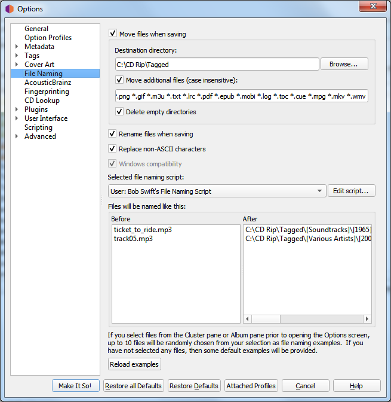

File Naming Options¶
{kind=link}
These options determine how Picard handles files when they are saved with updated metadata.
Move files when saving
If selected, this option tells Picard to move your audio files to a new directory when it saves them. One use for this is to keep your work organized: all untagged files are under “Directory A”, and when Picard tags them it moves them to “Directory B”. When “Directory A” is empty, your tagging work is done.
If this option is left unchecked, then Picard will leave the files in the same directory when they are saved.
Note
The “Rename Files” and “Move Files” options are independent of one another. “Rename Files” refers to Picard changing file names, typically based on artist and track names. “Move Files” refers to Picard moving files to new directories, based on a specified parent directory and subdirectories, typically based on album artist name and release title. However, they both use the same “file naming string”. “Move files” uses the portion up until the last ‘/’. “Rename files” uses the portion after the last ‘/’.
Destination directory
This specifies the destination parent directory to which files are moved when they are saved, if the “Move files when saving” option is selected. If you use the directory “.” the files will be moved relative to their current location. If they are already in some sort of directory structure, this will probably not do what you want!
Move additional files
Enter patterns that match any other files you want Picard to move when saving music files (e.g.: “Folder.jpg”, “*.png”, “*.cue”, “*.log”). Patterns support the Unix shell-style wildcards, and are separated by spaces. The wildcard patters available are:
Pattern
Meaning
*
matches everything
?
matches any single character
[seq]
matches any character in seq
[!seq]
matches any character not in seq
For a literal match, wrap the meta-characters in brackets. For example, ‘[?]’ matches the character ‘?’.
When these additional files are moved they will end up in the release directory with your music files. In a pattern, the ‘*’ character matches zero or more characters. Other text, like “.jpg”, matches those exact characters. Thus “*.jpg” matches “cover.jpg”, “liner.jpg”, “a.jpg”, and “.jpg”, but not “nomatch.jpg2”.
Note
This option can also be used to move subdirectories to the new release directory. This is done by specifying the name of the subdirectory in the list of files to be moved. For example, if your album folders have a subfolder called “Artwork”, “covers” or “scans” that contains additional image files that you also want to move to the new release directory, simply add “artwork”, “covers” and “scans” to the list of additional file matching patterns.
Delete empty directories
When selected, Picard will remove directories that have become empty once a move is completed. Leave this unchecked if you want Picard to leave the source directory structure unchanged. Checking this box may be convenient if you are using the “move files” option to organize your work. An empty directory has no more work for you to do, and deleting the directory makes that clear.
Rename files when saving
Select this option to let Picard change the file and directory names of your files when it saves them, in order to make the file and directory names consistent with the new metadata.
Replace non-ASCII characters
Select this option to replace non-ASCII characters with their ASCII equivalent (e.g.: ‘á’, ‘ä’ and ‘ǎ’ with ‘a’; ‘é’, ‘ě’ and ‘ë’ with ‘e’; ‘æ’ with “ae”). More information regarding ASCII characters can be found on Wikipedia.
Windows compatibility
This option tells Picard to replace all Windows-incompatible characters with an underscore. This is enabled by default on Windows systems, with no option to disable.
Selected file naming script
As of Picard version 2.7, multiple file naming scripts are supported. This option allows the user to select the file naming script to use from the list of scripts available. Scripts can be either system preset scripts or user-defined scripts. The available scripts are managed in the File naming script editor screen, which is displayed when the Edit script… button is selected.
Files will be named like this
Below the file naming script selector is a section showing examples of the output of the script in two columns: Before and After. If you select files from the Cluster pane or Album pane prior to opening the Options screen, up to 10 files will be randomly chosen from your selection as file naming examples. If you have not selected any files, then some default examples will be provided.
You can change the randomly selected example files from your selected files list by clicking on the Reload examples button.
Note
Any new tags set or tags modified by the file naming script will not be written to the output files’ metadata.
See also